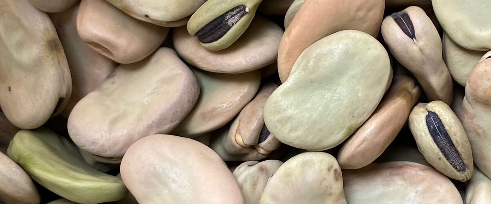

When to plant fava beans in Burns, OR
Plant fava beans from seed, directly in the garden in Burns, Apr 30 – Jun 4.
Why these dates
Burns's typical last spring frost is June 11. As a cool-season crop that handles light frost, this crop can go in about 6 weeks before that.
High desert and mountains. Central and high eastern Oregon. Frost is possible almost any month. Use row covers, wall-o-water or cloches for warm crops, and choose short-season varieties.
- Difficulty
- Easy
- Sun
- Full sun
- Spacing
- 6 inches apart
- Planting depth
- 1 to 2 inches deep
- Frost
- Handles light frost
- First harvest
- About 85 days after planting
Step by step
- Prepare the bed: loosen the soil and mix in an inch or two of compost.
- Plant seeds Apr 30 – Jun 4, 1 to 2 inches deep, 6 inches apart.
- Keep the soil evenly moist until sprouts appear, which can take one to three weeks in cool soil.
- Harvest: Pick pods when they bulge with beans but are still green. Shell the beans and slip off the pale skins for the sweetest flavor.
Varieties that do well here
- Broad Windsor
- Aquadulce Claudia (for fall sowing)
- Vroma
Watch out for
Black aphids gather on the growing tips in late spring. Pinch off the tips once pods start forming.
Unlike other beans, favas love cool weather. West of the Cascades they can also be sown in October to overwinter for an early crop.
Common questions
When is the last frost in Burns, OR?
Typically June 11. In 9 years out of 10, frost is over by June 28. These are 1991–2020 NOAA climate normals for Burns Municipal Airport.
Is it too late to plant fava beans in Burns?
The spring planting window runs through June 4. Later plantings tend to struggle in summer heat.
How long until I can harvest fava beans?
About 85 days after planting. Pick pods when they bulge with beans but are still green. Shell the beans and slip off the pale skins for the sweetest flavor.
Also plant in Burns around the same time
Planting dates for fava beans in nearby areas
- Bend and Redmond, OR Apr 28 – Jun 2
- Klamath Falls, OR Apr 28 – Jun 2
- Baker City, OR Apr 20 – May 25